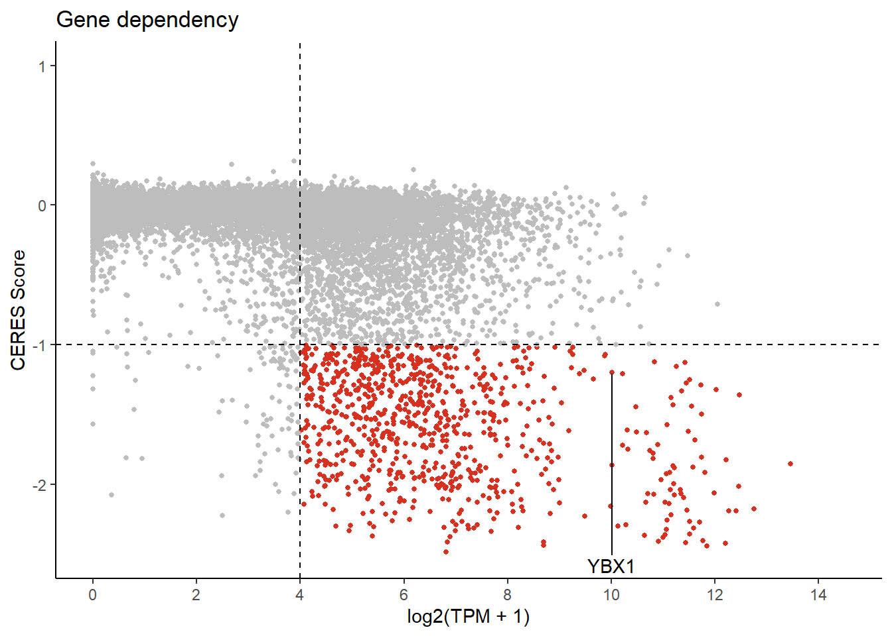

##########################################################################################
library('tidyverse')
library('vroom')
library('ggrepel')
library('RColorBrewer')Ewing dependency genes
Setting up the environment
These are packages you will need for this notebook. For exact versions used, please refer to the session info at the bottom of this notebook.
I want to set a base directory that we can use as a link to the directory where we will do most of the work. I use two directories here because the Workspace is what is pushed to GitHub and contains scripts and plot files, but the Repository is where more of the big data is stored that does not get pushed.
##########################################################################################
generalDatasets = 'C:/Users/chughes/Documents/bccrc/projectsRepository/generalDatasets'
baseWorkspace = 'C:/Users/chughes/Documents/bccrc/projectsWorkspace/sorensenLab/relatedToYbx1'
baseRepository = 'C:/Users/chughes/Documents/bccrc/projectsRepository/sorensenLab/relatedToYbx1'Data processing
First I need to read in the dependency data.
##########################################################################################
crispr = vroom(paste(generalDatasets, '/depmap22Q2/CRISPR_gene_effect.csv', sep = ''), show_col_types = FALSE)
colnames(crispr)[1] = 'DepMap_ID'Data read looks good. Now I will get the cell line annotation details and create a list of just the Ewing sarcoma cell lines.
##########################################################################################
anno = read_csv(paste(generalDatasets, '/depmap22Q2/sample_info.csv', sep = ''), show_col_types = FALSE)
esSet = anno[grepl('Ewing',anno$lineage_subtype),]So there are 39 lines associated with Ewing sarcoma. The table also contains some information about whether they are EWS-FLI or EWS-ERG, which might be useful later on. Now lets find out which genes are the most essential for this lineage subtype.
##########################################################################################
crisprEs = crispr %>%
filter(DepMap_ID %in% esSet$DepMap_ID) %>%
pivot_longer(cols = `A1BG (1)`:`ZZZ3 (26009)`, names_to = 'gene', values_to = 'rnaExp') %>%
pivot_wider(id_cols = gene, names_from = DepMap_ID, values_from = rnaExp)
crisprEs$medDep = apply(crisprEs[,2:ncol(crisprEs)], 1, function(x) median(x, na.rm = TRUE))
crisprTop = crisprEs %>%
arrange(medDep) %>%
mutate('symbol' = sub('(.*) \\([0-9]+\\).*$', '\\1', gene)) %>%
dplyr::select(symbol, medDep)So now we have our ranked list of genes based on their dependency scores in Ewing sarcoma cell lines. I would like to add expression data for these using the RNAseq data from Depmap.First, grab the RNA data.
##########################################################################################
rna = vroom(paste(generalDatasets, '/depmap22Q2/CCLE_expression.csv', sep = ''), show_col_types = FALSE)New names:
* `` -> `...1`colnames(rna)[1] = 'DepMap_ID'
rnaColumns = c(colnames(rna)[2], colnames(rna)[ncol(rna)])Now reshape it to be similar to the crispr output from above.
##########################################################################################
rnaEs = rna %>%
filter(DepMap_ID %in% esSet$DepMap_ID) %>%
pivot_longer(cols = `TSPAN6 (7105)`:`CDR1 (1038)`, names_to = 'gene', values_to = 'rnaExp') %>%
pivot_wider(id_cols = gene, names_from = DepMap_ID, values_from = rnaExp)
rnaEs$medExprs = apply(rnaEs[,2:ncol(rnaEs)], 1, function(x) median(x, na.rm = TRUE))
rnaTop = rnaEs %>%
mutate('symbol' = sub('(.*) \\([0-9]+\\).*$', '\\1', gene)) %>%
dplyr::select(symbol, medExprs)Now join the two datasets and export to a file for later use.
##########################################################################################
depSet = crisprTop %>%
left_join(rnaTop) %>%
mutate(depScore = medDep * medExprs) %>%
arrange(depScore)Joining, by = "symbol"saveRDS(depSet, paste(baseRepository, '/database20200604_depmapEwing/dataset_ewingRnaExprsCrisprDep.rds', sep = ''))Ok, this looks good. Keep in mind that many of these genes are classified as ‘essential’, and are things like ribosome components and we aren’t necessarily as interested in these. We can filter them later on if we would like. Actually, lets label these and resave the data.
##########################################################################################
essentials = read_csv(paste(generalDatasets, '/depmap22Q2/Achilles_common_essentials.csv', sep = ''), show_col_types = FALSE) %>%
mutate(symbol = sub('(.*) \\([0-9]+\\).*$', '\\1', gene)) %>%
mutate(isEssential = 'TRUE') %>%
dplyr::select(symbol, isEssential)
depSetAnnotated = depSet %>%
left_join(essentials)Joining, by = "symbol"saveRDS(depSet, paste(baseRepository, '/database20200604_depmapEwing/dataset_ewingRnaExprsCrisprDep.rds', sep = ''))Alright, now we have all these data just in case we want them later. Now we can make a quick plot for genes that we will carry forward to the survival analysis.
##########################################################################################
depSetAnnotated = readRDS(paste(baseRepository, '/database20200604_depmapEwing/dataset_ewingRnaExprsCrisprDep.rds', sep = ''))
depSetAnnotated$pColors = ifelse(depSetAnnotated$medDep <= -1 & depSetAnnotated$medExprs >= 4,
brewer.pal(4,'OrRd')[4], brewer.pal(3,'Greys')[2])
depSetAnnotated$pText = ifelse(grepl('YBX1',depSetAnnotated$symbol), depSetAnnotated$symbol, '')
table(depSetAnnotated$pColors)
#BDBDBD #D7301F
16558 828 ggplot(depSetAnnotated, aes(medExprs, medDep)) +
geom_point(size = 1, color = depSetAnnotated$pColors) +
geom_text_repel(label = depSetAnnotated$pText, nudge_y = -2) +
labs(x = 'log2(TPM + 1)', y = 'CERES Score', title = 'Gene dependency') +
scale_x_continuous(limits = c(0,14.5), breaks = seq(0,20,2)) +
scale_y_continuous(limits = c(-2.5,1), breaks = seq(-3,3,1)) +
geom_hline(yintercept = -1, linetype = 'dashed') +
geom_vline(xintercept = 4, linetype = 'dashed') +
theme_classic()Warning: Removed 110 rows containing missing values (geom_point).Warning: Removed 110 rows containing missing values (geom_text_repel).
ggsave(paste(baseRepository, '/database20200604_depmapEwing/scatter_rnaExprsDependentEwing.pdf', sep = ''),
width = 2, height = 2, useDingbats = FALSE)Warning: Removed 110 rows containing missing values (geom_point).
Removed 110 rows containing missing values (geom_text_repel).Session info
##########################################################################################
sessionInfo()R version 4.1.3 (2022-03-10)
Platform: x86_64-w64-mingw32/x64 (64-bit)
Running under: Windows 10 x64 (build 19042)
Matrix products: default
locale:
[1] LC_COLLATE=English_Canada.1252 LC_CTYPE=English_Canada.1252
[3] LC_MONETARY=English_Canada.1252 LC_NUMERIC=C
[5] LC_TIME=English_Canada.1252
attached base packages:
[1] stats graphics grDevices utils datasets methods base
other attached packages:
[1] RColorBrewer_1.1-3 ggrepel_0.9.1 vroom_1.5.7 forcats_0.5.2
[5] stringr_1.4.1 dplyr_1.0.9 purrr_0.3.4 readr_2.1.2
[9] tidyr_1.2.0 tibble_3.1.8 ggplot2_3.3.6 tidyverse_1.3.2
loaded via a namespace (and not attached):
[1] Rcpp_1.0.9 lubridate_1.8.0 assertthat_0.2.1
[4] digest_0.6.29 utf8_1.2.2 R6_2.5.1
[7] cellranger_1.1.0 backports_1.4.1 reprex_2.0.2
[10] evaluate_0.16 httr_1.4.4 pillar_1.8.1
[13] rlang_1.0.4 googlesheets4_1.0.1 readxl_1.4.1
[16] rstudioapi_0.14 rmarkdown_2.16 textshaping_0.3.6
[19] googledrive_2.0.0 htmlwidgets_1.5.4 bit_4.0.4
[22] munsell_0.5.0 broom_1.0.1 compiler_4.1.3
[25] modelr_0.1.9 xfun_0.32 systemfonts_1.0.4
[28] pkgconfig_2.0.3 htmltools_0.5.3 tidyselect_1.1.2
[31] fansi_1.0.3 crayon_1.5.1 tzdb_0.3.0
[34] dbplyr_2.2.1 withr_2.5.0 grid_4.1.3
[37] jsonlite_1.8.0 gtable_0.3.0 lifecycle_1.0.1
[40] DBI_1.1.3 magrittr_2.0.3 scales_1.2.1
[43] cli_3.3.0 stringi_1.7.8 farver_2.1.1
[46] fs_1.5.2 xml2_1.3.3 ragg_1.2.2
[49] ellipsis_0.3.2 generics_0.1.3 vctrs_0.4.1
[52] tools_4.1.3 bit64_4.0.5 glue_1.6.2
[55] hms_1.1.2 parallel_4.1.3 fastmap_1.1.0
[58] yaml_2.3.5 colorspace_2.0-3 gargle_1.2.0
[61] rvest_1.0.3 knitr_1.40 haven_2.5.1